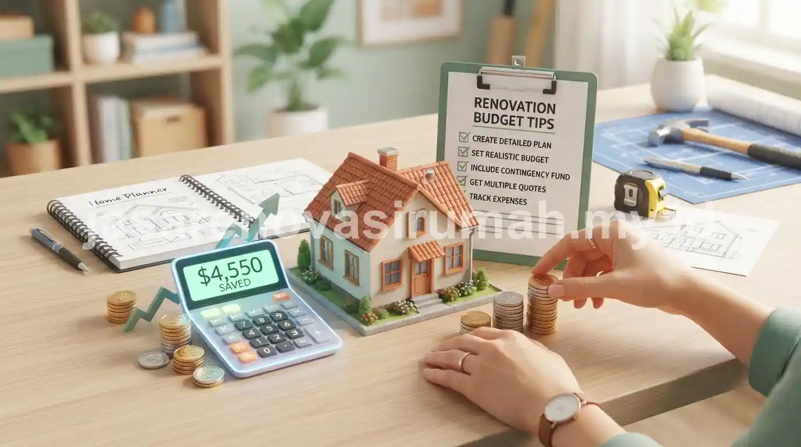

Estimasi RAB renovasi rumah yang aman disusun dengan merinci setiap komponen pekerjaan, menyertakan dana cadangan sekitar 10-15 persen dari total anggaran.
Selain itu, memantau realisasi biaya secara berkala selama proyek berjalan juga sangat penting untuk menghindari overbudget.
Pembengkakan biaya renovasi umumnya terjadi bukan karena harga material naik drastis, melainkan karena RAB awal tidak merinci seluruh pekerjaan secara detail sejak awal.
Apa Saja Komponen yang Wajib Ada dalam RAB Renovasi?
Komponen wajib dalam RAB renovasi mencakup biaya bongkar, material baru, upah tukang, serta biaya kebersihan dan pembuangan puing setelah pekerjaan selesai.
Berikut rincian komponen yang sering terlewat namun tetap wajib dimasukkan:
- Biaya bongkar: pembongkaran dinding, keramik, atau atap lama sebelum pekerjaan baru dimulai.
- Material utama: keramik, cat, kusen, dan material finishing sesuai desain yang disepakati.
- Upah tukang: baik sistem harian maupun borongan, tergantung skala pekerjaan.
- Biaya kebersihan: pembuangan puing dan pembersihan akhir setelah renovasi selesai.
- Biaya tak terduga: dialokasikan sebagai buffer untuk kondisi lapangan yang tidak terlihat sebelum bongkar, seperti kerusakan pipa tersembunyi.
Untuk gambaran kisaran harga material per meter persegi, Anda bisa merujuk pada panduan biaya bangun rumah per m2 sebagai acuan kasar.
Hal ini karena logika perhitungan sebagian besar komponen renovasi mengikuti pola serupa dengan pembangunan baru.
Berapa Persen Dana Cadangan yang Ideal untuk Renovasi?
Dana cadangan sekitar 10-15 persen dari total anggaran umumnya disarankan untuk mengantisipasi temuan kondisi tak terduga saat pembongkaran struktur lama.
Kondisi tak terduga yang sering muncul saat renovasi antara lain kerusakan instalasi listrik tersembunyi, pipa air yang sudah keropos, atau kondisi pondasi yang ternyata perlu diperkuat.
Semakin tua usia bangunan yang akan direnovasi, semakin besar pula potensi ditemukannya kondisi semacam ini.
Oleh karena itu, dana cadangan sebaiknya disesuaikan dengan usia dan kondisi awal rumah.
Bagaimana Cara Mengontrol Anggaran agar Tidak Overbudget?
Cara paling efektif adalah menetapkan RAB sebagai acuan tertulis yang disepakati bersama kontraktor.
Lalu memantau realisasi pengeluaran setiap tahap pekerjaan selesai.
Beberapa langkah praktis untuk menjaga anggaran tetap terkendali:
- Sepakati RAB tertulis dengan rincian material dan upah sebelum pekerjaan dimulai.
- Hindari perubahan desain di tengah jalan tanpa menghitung ulang dampak biayanya.
- Lakukan pengecekan progres dan realisasi biaya di setiap tahap, bukan hanya di akhir proyek.
- Simpan bukti pembelian material untuk mencocokkan dengan RAB awal.
Menyusun RAB secara mandiri bisa menjadi titik awal yang baik, namun untuk hasil yang lebih akurat sesuai kondisi rumah Anda, sebaiknya berkonsultasi langsung dengan jasa renovasi rumah.
Mereka dapat melakukan survey lokasi dan menyusun RAB rinci berdasarkan kondisi bangunan riil.

Kesalahan Umum Saat Menyusun RAB Renovasi
Kesalahan yang paling sering terjadi adalah menyamakan estimasi biaya renovasi dengan biaya bangun baru per meter persegi.
Padahal renovasi memiliki komponen tambahan seperti biaya bongkar yang tidak ada pada pembangunan dari nol.
Kesalahan lain yang perlu dihindari:
- Tidak memasukkan biaya perbaikan struktur tersembunyi yang baru diketahui saat bongkar.
- Membandingkan penawaran kontraktor hanya dari total angka tanpa membandingkan rincian spesifikasi.
- Tidak menyisihkan dana cadangan sama sekali dengan asumsi semua akan berjalan sesuai rencana.
Pada akhirnya, RAB renovasi yang aman dari overbudget adalah RAB yang disusun rinci, realistis, dan disertai dana cadangan yang memadai.
Gunakan kalkulator RAB sebagai alat bantu estimasi awal, lalu konsultasikan hasilnya dengan tim jasa renovasi rumah terpercaya untuk mendapatkan angka yang lebih akurat sesuai kondisi rumah Anda.